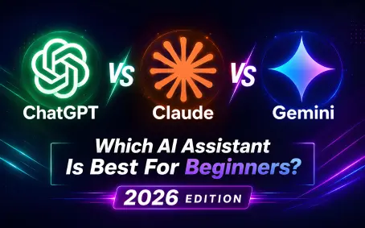

Let me be honest with you. If you are just starting with AI in 2026, you are probably feeling a little overwhelmed. I was too.
Every week, there is a new model update. One day, everyone is talking about ChatGPT's latest upgrade. The next, Claude is the "genius" writer. Then Gemini drops a feature that connects to everything Google.
I have been testing all three of these AI assistants side-by-side for months—not for hype, but for real work. I have used them to write blog posts, summarize boring PDFs, brainstorm business names, and even plan my weekly schedule.
Here is the good news: You do not need to be a tech wizard to use these. But you *do* need to know which one to grab for the right job.
In this guide, I am going to cut through the marketing noise and tell you exactly which assistant works best for beginners, freelancers, and small business owners in 2026. Let's dive in.
What Is ChatGPT? The All-Rounder
OpenAI's ChatGPT is the name everyone knows. It started the revolution, and in 2026, it is still the default choice for most people. But is it actually the *best*?
What it does best: ChatGPT is your classic swiss army knife. It can do almost everything pretty well. Need a draft of an email? Done. Need a Python script? Easy. Want to brainstorm a marketing angle? It is fantastic at that.
Writing & Research: The writing style is very clear and professional, but sometimes it feels a little... robotic. You can usually tell if an email was written by default ChatGPT because it loves using words like "delve" and "testament." That said, the latest GPT-5.5 models are much better at sounding human than they were a year ago.
Ease of use for beginners: This is where ChatGPT shines. The interface is incredibly clean. You open the website or app, and there is a chat bar. That is it. There is no learning curve. For a complete beginner who just wants to see what the fuss is about, this is the safest starting point.
Pricing: The free plan is surprisingly generous. You get access to a pretty smart model (GPT-5.2) with limited daily questions. But to get the real power (GPT-5.5 and "Deep Research"), you will want the Plus plan at about $20 per month.
What Is Claude? The Writer's Companion
Claude, built by Anthropic, is the "smart friend" of the group. For the first year of using AI, I ignored Claude because ChatGPT was fine. That was a mistake. Once I switched to Claude for writing, I never looked back.
Long-form writing strengths: If you write blog posts, newsletters, or long reports, Claude is your winner. It has "personality." When you ask Claude to write something, it doesn't just spit out facts; it seems to *understand* the nuance of what you are asking.
According to recent benchmarks, Claude Opus 4.6 (the latest high-end model) is dominant in software engineering and graduate-level reasoning, but for writing, it just *flows* better than the others. It uses a more natural, conversational tone without you having to beg it to "write like a human."
Document analysis: Here is a killer feature for beginners: Claude is incredible at analyzing huge PDFs. You can drop a 50-page contract or a dense academic paper into Claude, and it will summarize it with incredible accuracy. It has a massive context window (about 1 million tokens), meaning it can read a whole book series in one go.
Where it beats ChatGPT: Creativity and nuance. If ChatGPT writes like a very efficient MBA student, Claude writes like a novelist. For content creators and solopreneurs writing sales copy or personal essays, this is a game-changer.
Pricing: There is a free tier, but it fills up fast. The Pro plan is roughly $20 per month. It is worth every penny if you write for a living.
What Is Gemini? The Researcher's Edge
Google's Gemini (formerly Bard) was a bit of a joke when it first launched. It was slow and made weird mistakes. Fast forward to 2026, and Gemini 3.1 Pro is a completely different beast. It might be the most underrated tool on this list.
Google ecosystem integration: This is the secret weapon. If you live inside Gmail, Google Docs, or Google Drive, Gemini is a no-brainer. It can summarize your email threads, create slideshows, or pull data from a spreadsheet you haven't opened in months.
Research strengths: Gemini is excellent at what is called "grounding." Because it is Google, it is very good at checking its facts against Search results. It doesn't hallucinate (make up facts) as much as the others do when it comes to current events.
Productivity features: The "Deep Think" feature on Gemini is genuinely impressive. If you are trying to figure out a complicated business logic problem or analyze a messy dataset, it walks you through the reasoning step-by-step like a patient tutor.
Pricing: Like the others, it has a free version. The paid "AI Premium" plan is about $20–$25. However, if you pay for Google One storage, you might already have access to some Gemini features.
ChatGPT vs Claude vs Gemini: The Real-World Comparison
Let's stop looking at spec sheets. Here is how they actually feel to use.
| Feature | ChatGPT | Claude | Gemini |
|---|---|---|---|
| Ease of Use | Winner (simplest) | Good | Good (if on Google) |
| Writing Quality | Versatile, generic | Winner (most human) | Dry, factual |
| Research Accuracy | Good with plugins | Good for analysis | Winner (live data) |
| Creativity | Strong | Winner (by a mile) | Average |
| Free Tier Value | Winner (most generous) | Limited | Generous |
| Best For | Beginners, generalists | Writers, creators | Researchers, Google users |
Which Tool Wins for Specific Beginner Tasks?
Writing Blog Posts or Newsletters: Use Claude. It has the best narrative flow.
Writing Professional Emails: Tie between ChatGPT and Gemini. ChatGPT is faster, Gemini is better if you need to reference your Gmail history.
Learning a New Skill (Coding): ChatGPT is generally better for technical tutorials.
Summarizing PDFs / Research: Gemini or Claude. For text-heavy PDFs, Claude wins. For charts or weird formatting, Gemini 3.1 Pro is better.
Brainstorming Business Ideas: ChatGPT for volume, Claude for depth.
The Honest Limitations You Need to Know
1. Hallucinations: All three of them lie. Gemini is usually the safest for facts, but never use AI for legal advice.
2. The "Generic" Tone: If you don't give good instructions, ChatGPT writes like a robot. Claude can be verbose. You have to edit.
3. Cost: Free tiers are great for testing, but for daily work, you will need the $20/month subscription.
Who Should Choose Which?
Choose ChatGPT if: You are an absolute beginner, a generalist, or a freelancer on a budget. It has the best free tier.
Choose Claude if: You are a content creator, writer, or solopreneur who needs to sound human. It is the king of long-form.
Choose Gemini if: You live inside Google Workspace, or you do heavy research and data analysis.
Final Verdict: Which AI Assistant Should Beginners Start With in 2026?
Start with ChatGPT.
While I prefer Claude for writing and respect Gemini for research, ChatGPT is the best learning tool. It is the most forgiving. There are millions of free tutorials on YouTube for "ChatGPT for X." It works for almost everything out of the box.
The wrong choice is doing nothing. Pick one, start chatting, and watch how much time you get back.
Frequently Asked Questions (FAQs)
Yes, generally. ChatGPT has a simpler interface and a more generous free tier, making it easier to learn the ropes. Claude is better for specific writing tasks once you know what you are doing.
Yes, Google Gemini has a robust free tier. However, to access the best models (like Gemini 3.1 Pro) and advanced features like "Deep Think," you will need a Google AI Premium subscription.
For freelancers who write, edit, or create content, Claude is usually the best. For freelancers in tech, data entry, or general admin, ChatGPT offers more versatility.
No. They can accelerate search, but they still make mistakes. For critical facts, you should use a traditional search engine or verify the AI's citations. Gemini is currently the best at integrating Search to reduce errors.
For the free tier, ChatGPT. For the paid tier at $20 per month, it is a tie between ChatGPT Plus and Claude Pro. If you use Google Workspace, Gemini offers the best integrated value.